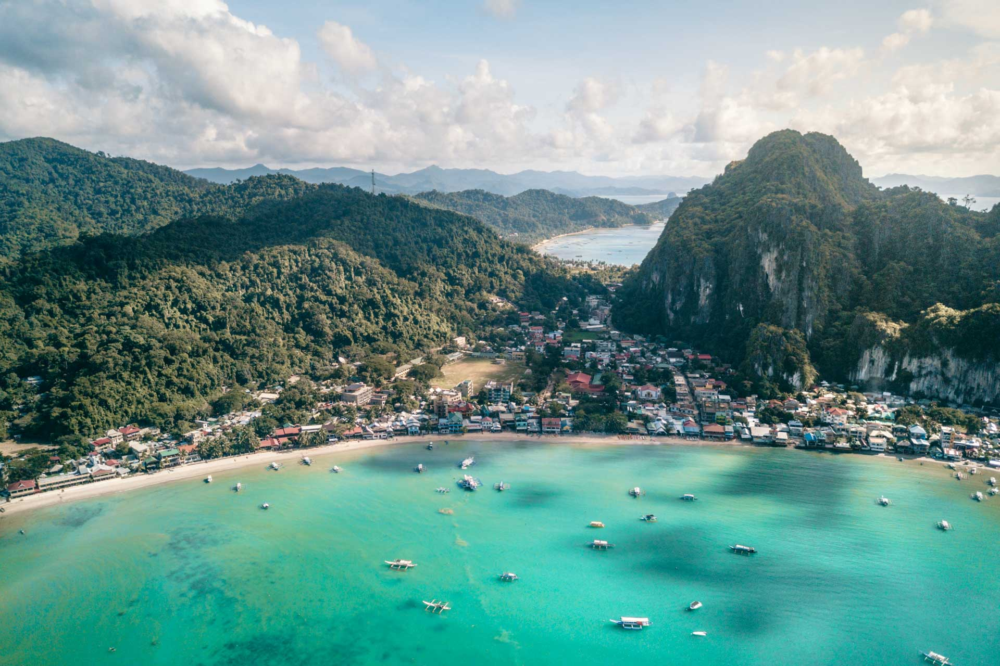
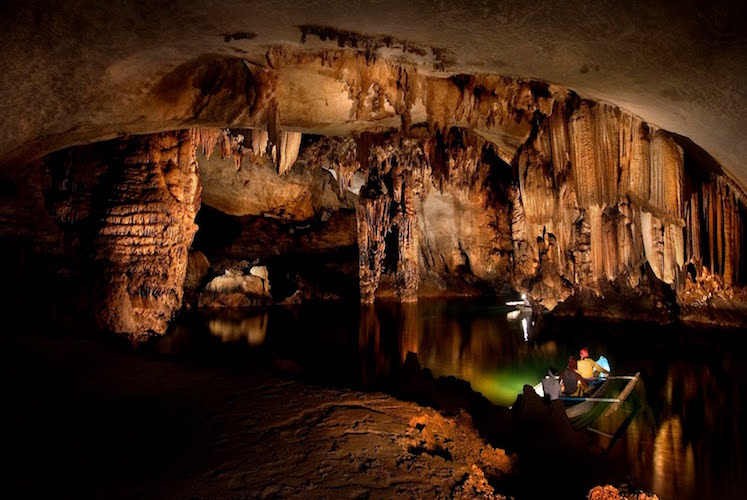
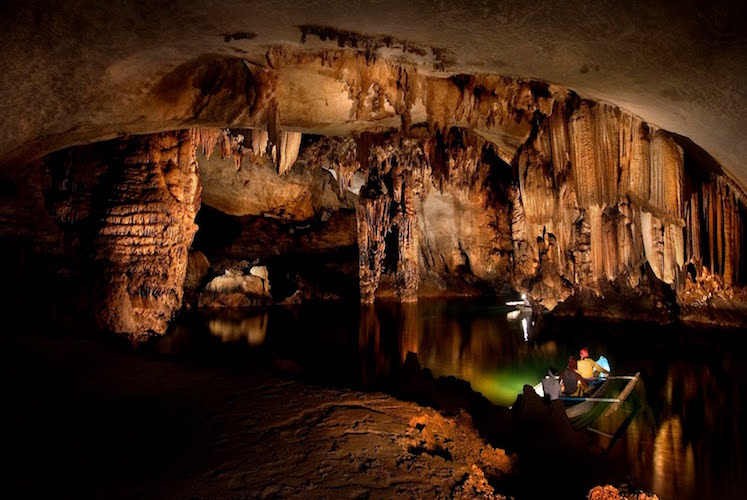

Landmarks
Many Historical and Cultural centers of the Philippines offer visitors insight into the country’s rich heritage.
Three of the best Historical centers to visit are Intramuros (located within the city of Manila) which is a historical Walled city established when the Spanish Colonised the Philippines, the Rizal Monument in Luneta dedicated to Jose Rizal (an important Filipino National Hero) and the San Agustin Church (a Baroque style Church), one of the UNESCO World Heritage Sites in the Philippines.
As for Natural Attractions, the Philippines includes some of the best examples of Natural Wonders, including the Chocolate Hills in Bohol, the Banaue Rice Terraces, recognized as the "Eighth Wonder of the World," and the Mayon Volcano (known for its perfect cone shape), to name a few!
The beautiful, white sandy beaches of Boracay, El Nido and Coron in Palawan, and of course the Puerto Princesa Underground River (UNESCO site) exemplify the diversity of Filipino culture and heritage.
-

 
